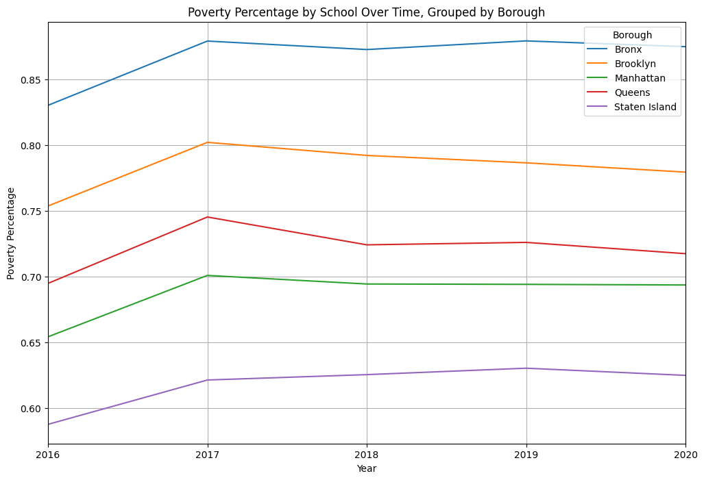
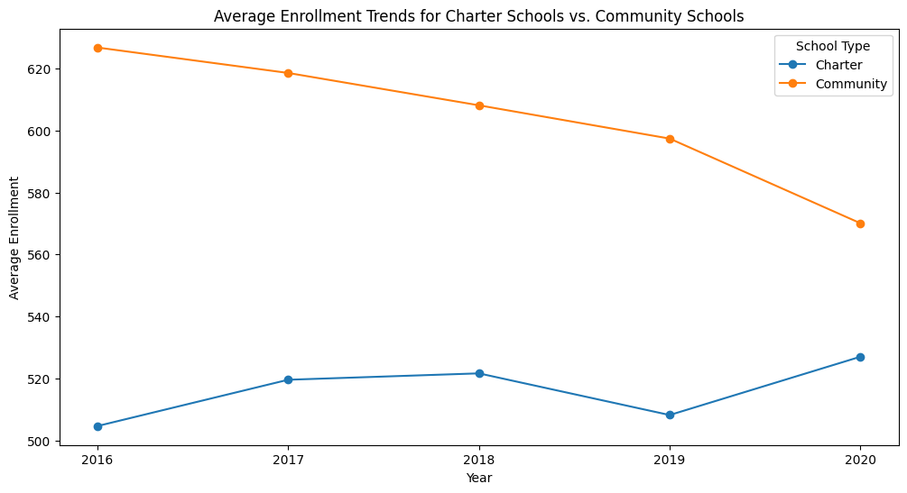

Time-Series Analysis#
# install the package and its requirements
%pip install nycschools
import pandas as pd
from nycschools import schools, exams
# school demographics in one frame
demo = schools.load_school_demographics()
# subset the data to only include the columns we need
demo = demo[['dbn', 'beds', 'zip', 'district', 'geo_district', 'boro', 'school_name',
'short_name', 'ay', 'year', 'school_type', 'total_enrollment',
'female_n', 'female_pct', 'male_n',
'male_pct', 'asian_n', 'asian_pct', 'black_n', 'black_pct',
'hispanic_n', 'hispanic_pct', 'multi_racial_n', 'multi_racial_pct',
'native_american_n', 'native_american_pct', 'white_n', 'white_pct',
'missing_race_ethnicity_data_n', 'missing_race_ethnicity_data_pct',
'swd_n', 'swd_pct', 'ell_n', 'ell_pct', 'poverty_n', 'poverty_pct',
'eni_pct']]
import pandas as pd
import matplotlib.pyplot as plt
# Convert poverty_pct to numerical format
demo['poverty_pct'] = pd.to_numeric(demo['poverty_pct'], errors='coerce')
# Convert year to datetime format
demo['ay'] = pd.to_datetime(demo['ay'], format='%Y')
# Group by boro, school_name, and year and calculate mean poverty_pct
grouped = demo.groupby(['boro','ay'])['poverty_pct'].mean().reset_index()
# Pivot the DataFrame
pivoted = pd.pivot_table(grouped, values='poverty_pct', index='ay', columns=['boro'])
# Plot the time series and make the title 'Borough'
pivoted.plot(figsize=(12,8), grid=True)
plt.title('Poverty Percentage by School Over Time, Grouped by Borough')
plt.xlabel('Year')
plt.ylabel('Poverty Percentage')
plt.legend(title='Borough', loc='upper right')
plt.show()

###################
# school demographics in one frame
demo2 = schools.load_school_demographics()
# subset the data to only include the columns we need
demo2 = demo2[['dbn', 'beds', 'zip', 'district', 'geo_district', 'boro', 'school_name',
'short_name', 'ay', 'year', 'school_type', 'total_enrollment',
'female_n', 'female_pct', 'male_n',
'male_pct', 'asian_n', 'asian_pct', 'black_n', 'black_pct',
'hispanic_n', 'hispanic_pct', 'multi_racial_n', 'multi_racial_pct',
'native_american_n', 'native_american_pct', 'white_n', 'white_pct',
'missing_race_ethnicity_data_n', 'missing_race_ethnicity_data_pct',
'swd_n', 'swd_pct', 'ell_n', 'ell_pct', 'poverty_n', 'poverty_pct',
'eni_pct']]
# create a new dataframe for each school type
charter_schools = demo2[demo2['school_type'] == 'charter']
community_schools = demo2[demo2['school_type'] == 'community']
# group by year and calculate the mean total enrollment for each school type
charter_schools_by_year = charter_schools.groupby('ay')['total_enrollment'].mean()
community_schools_by_year = community_schools.groupby('ay')['total_enrollment'].mean()
#reset the index for each dataframe
charter_schools_by_year = charter_schools_by_year.reset_index()
community_schools_by_year = community_schools_by_year.reset_index()
import matplotlib.pyplot as plt
from matplotlib.ticker import MaxNLocator
plt.figure(figsize=(12, 6))
plt.plot(charter_schools_by_year['ay'], charter_schools_by_year['total_enrollment'], label='Charter', marker='o')
plt.plot(community_schools_by_year['ay'], community_schools_by_year['total_enrollment'], label='Community', marker='o')
plt.xlabel('Year')
plt.ylabel('Average Enrollment')
plt.title('Average Enrollment Trends for Charter Schools vs. Community Schools')
# Set x-axis tick labels to integers
ax = plt.gca()
ax.xaxis.set_major_locator(MaxNLocator(integer=True))
plt.legend(title = 'School Type')
plt.show()

import plotly.graph_objects as go
# Create a line plot with interactive features
fig = go.Figure()
# Add a trace for Charter Schools
fig.add_trace(go.Scatter(x=charter_schools_by_year['ay'],
y=charter_schools_by_year['total_enrollment'],
mode='lines+markers',
name='Charter'))
# Add a trace for Community Schools
fig.add_trace(go.Scatter(x=community_schools_by_year['ay'],
y=community_schools_by_year['total_enrollment'],
mode='lines+markers',
name='Community'))
# Update the layout (title, axis labels, etc.)
fig.update_layout(title='<span style="font-weight:bold;text-decoration:underline;">Average Enrollment Trends for Charter Schools vs. Community Schools</span>',
title_x=0.5,
xaxis_title='Year',
yaxis_title='Average Enrollment',
legend_title_text='School Type',
xaxis=dict(dtick=1))
# Show the interactive plot
fig.show()
import numpy as np
import pandas as pd
from statsmodels.tsa.ar_model import AutoReg
# Autoregression for Charter Schools
charter_schools_series = pd.Series(charter_schools_by_year['total_enrollment'].values, index=charter_schools_by_year['ay'])
charter_schools_series.index = pd.to_datetime(charter_schools_series.index, format='%Y').to_period('A')
# Choose a lag value based on your data and domain knowledge
lag = 1
# Fit the autoregression model
charter_model = AutoReg(charter_schools_series, lags=lag, old_names=False)
charter_model_fit = charter_model.fit()
# Print model summary
print("Charter Schools Autoregression Model Summary:")
print(charter_model_fit.summary())
# Autoregression for Community Schools
community_schools_series = pd.Series(community_schools_by_year['total_enrollment'].values, index=community_schools_by_year['ay'])
community_schools_series.index = pd.to_datetime(community_schools_series.index, format='%Y').to_period('A')
# Fit the autoregression model
community_model = AutoReg(community_schools_series, lags=lag, old_names=False)
community_model_fit = community_model.fit()
# Print model summary
print("\nCommunity Schools Autoregression Model Summary:")
print(community_model_fit.summary())
Charter Schools Autoregression Model Summary:
AutoReg Model Results
==============================================================================
Dep. Variable: y No. Observations: 5
Model: AutoReg(1) Log Likelihood -12.478
Method: Conditional MLE S.D. of innovations 5.477
Date: Thu, 04 May 2023 AIC 30.956
Time: 21:52:51 BIC 29.115
Sample: 12-31-2017 HQIC 26.915
- 12-31-2020
==============================================================================
coef std err z P>|z| [0.025 0.975]
------------------------------------------------------------------------------
const 811.5450 194.229 4.178 0.000 430.863 1192.227
y.L1 -0.5695 0.378 -1.506 0.132 -1.311 0.172
Roots
=============================================================================
Real Imaginary Modulus Frequency
-----------------------------------------------------------------------------
AR.1 -1.7560 +0.0000j 1.7560 0.5000
-----------------------------------------------------------------------------
Community Schools Autoregression Model Summary:
AutoReg Model Results
==============================================================================
Dep. Variable: y No. Observations: 5
Model: AutoReg(1) Log Likelihood -11.088
Method: Conditional MLE S.D. of innovations 3.869
Date: Thu, 04 May 2023 AIC 28.176
Time: 21:52:51 BIC 26.334
Sample: 12-31-2017 HQIC 24.135
- 12-31-2020
==============================================================================
coef std err z P>|z| [0.025 0.975]
------------------------------------------------------------------------------
const -380.0416 107.393 -3.539 0.000 -590.529 -169.555
y.L1 1.5972 0.175 9.113 0.000 1.254 1.941
Roots
=============================================================================
Real Imaginary Modulus Frequency
-----------------------------------------------------------------------------
AR.1 0.6261 +0.0000j 0.6261 0.0000
-----------------------------------------------------------------------------
# Make predictions for the next year
n_future_steps = 1
charter_predictions = charter_model_fit.predict(start=len(charter_schools_series), end=len(charter_schools_series) + n_future_steps - 1)
community_predictions = community_model_fit.predict(start=len(community_schools_series), end=len(community_schools_series) + n_future_steps - 1)
# Print the predictions
print("Predicted average enrollment for next year (Charter Schools):", charter_predictions[0])
print("Predicted average enrollment for next year (Community Schools):", community_predictions[0])
Predicted average enrollment for next year (Charter Schools): 511.42923288458036
Predicted average enrollment for next year (Community Schools): 530.4495685068825